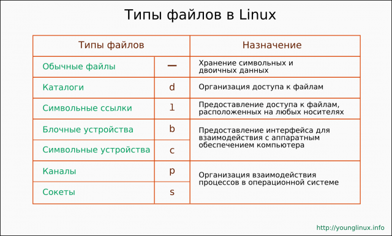
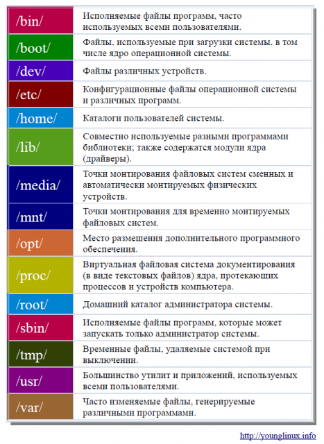

Введение в GNU/Linux
"Введение в GNU/Linux" - серия статей-уроков для начинающих пользователей Linux, знакомящая с историей, особенностями и философией операционных систем GNU/Linux.
Данный материал является обобщением материала тематически связанных статей русской и английской Википедии, а также других ресурсов, и их авторской интерпретацией. Могут содержаться неточности.
Статьи писались в качестве уроков-лекций, ориентированных на учащихся средних и старших классов.
Предпосылки возникновения и история операционных систем GNU/Linux
Введение
Операционные системы на базе ядра Linux представляют собой очень многообразную группу Unix-подобных операционных систем. Более грамотное название этих операционных систем — GNU/Linux. Каждый конкретный тип операционной системы на базе ядра Linux принято называть дистрибутивом. Каждый дистрибутив имеет собственное имя. Например, дистрибутивами GNU/Linux являются следующие операционные системы: Debian, AltLinux, Mandriva, Fedora, Ubuntu и многие другие. Каждый дистрибутив так или иначе развивается на протяжении своего относительно длинного или короткого периода «жизни», поэтому представлен различными версиями.
Возможно появление систем GNU/Linux является вполне естественным в эволюции компьютерных технологий. Далее в краткой форме дается представление о предпосылках возникновения и развитии операционных систем GNU/Linux.

UNIX
Поскольку GNU/Linux являются Unix-подобными операционными системами, то естественно начать изложение с описания ОС Unix. На самом деле, в настоящее время уже нет «чистой» Unix, хотя на заре своего появления она была одной единственной и неповторимой. Unix в свое время послужила основой для появления множества операционных систем, которые сегодня мы называем «Unix-подобные», и заложила важные принципы разработки и функционирования ОС вообще.
Unix начала разрабатываться в 1969 г. группой программистов, работавших в американской фирме Bell Laboratories. В начале 70-х годов для удобства разработки Unix, а скорее для того, чтобы большая часть ОС была независима от архитектуры компьютера, Денисом Ритчи и Кеном Томпсоном был создан язык Си. На этом языке до сих пор пишутся основные части большинства ОС.
Основной задачей при разработки Unix в то время было создание удобной среды для программистов. Приветствовался совместный труд при разработке программ. Так легче было увидеть ошибки, выделить хорошие идеи и забраковать тупиковые.
К середине 70-х Unix уже был достаточно широко распространен. Следует учитывать, что в то время персональных компьютеров (ПК) еще не было и под словами «широко распространен» имеются ввиду организации, владеющие большими компьютерами (по большей части это были университеты). Коллектив каждой организации, обзаведясь копией Unix (который распространялся бесплатно), старался его улучшить и расширить под свои нужды. Поэтому к концу десятилетия уже начинают появляться разновидности Unix. И даже появляется вариант коммерческого Unix'а.
В начале 80-х Unix был выбран в качестве системы, под которой планировалось развивать сетевой протокол TCP/IP, тем самым он получил хорошую поддержку для дальнейшего совершенствования и «прижился» на серверах.
С появлением коммерческих Unix'ов, полноценное развитие системы приостановилось. Это было связано с тем, что каждая фирма, продающая свой Unix, запрещала распространять свои исходные коды. Другие программисты не могли воспользоваться уже сделанным и начинали реализовывать уже созданную кем-то функцию или программу сначала. Кроме того, каждая фирма вносила свои собственные изменения. В результате программы, написанные для одной системы, не могли работать в другой. Т. е. Unix'ы стали несовместимы между собой. Проблема совместимости сильно влияет на совместную работу.
Хотя вопросами стандартизации Unix в последствие стали заниматься, однако закрытость системы оказала на нее негативное влияние, и возможно привело к тому, что она упустила возможность возможность развиваться в сторону персональных компьютеров.
GNU
В 1982 г. Ричард Столлман столкнулся с ситуацией, когда лицензия ПО не позволяла ему обмениваться исходниками программ в стенах института, где он работал. Он нашел это возмутительным и неестественным до такой степени, что ушел с работы.
В 1983 г. он основал проект GNU, целью которого было создание открытой и свободной ОС. GNU — это аббревиатура фразы "GNU - это не UNIX" (GNU - Not UNIX). Проект Ричарда Столлмана был поддержан многими людьми.
Для того, чтобы программисты могли писать программы Столлман разработал редактор Emacs. Потом был основан благотворительный фонд, отвечающий за распространение свободного ПО. Фонд получал некоторые деньги для проекта GNU путем распространения ПО и продажи руководств и сопутствующих услуг.
На протяжении 80-х годов в рамках проекта GNU была создана достаточно большая коллекция ПО. Однако к 90-му году ядро операционной системы еще не было готово.
MINIX
В 1987 г. Эндрю Таненбаум создал маленькую учебную Unix-подобную операционную систему, которую назвал Minix. На основе этой системы студенты Таненбаума знакомились с принципами работы ОС и с тем, из чего она состоит. Для того, чтобы каждый мог изучить исходные коды системы, она распространялась под лицензией, позволяющей ее свободное распространение (аналогично программному обеспечению из проекта GNU).
ОС Minix так или иначе оказала влияние на рождение Linux, т. к. большинство студентов изучали строение ОС именно на ее основе.
LINUX
В 1991 г. Линус Торвальдс познакомился с ОС Minix. Однако она не удовлетворяла его потребности в полной мере. И он начал создавать собственную операционную систему, программируя системные вызовы. К концу лета 91 года уже появляется сырой вариант ядра системы. В последствие данное ядро получило имя Linux.
Примечание. Ядро операционной системы обеспечивает взаимодействие программ (прикладных и системных) с аппаратной частью компьютера, регулирует распределение памяти и процессорного времени между работающими программами.
Поскольку Linux был свободен (каждый мог копировать) и открыт (исходные коды были доступны), он начала быстро распространяться и видоизменяться.
Развитие GNU/Linux
Поскольку проекту GNU в начале 90-х не хватало только ядра, то ядро Linux оказалось как нельзя кстати. Постепенно оно «обрастало» различным ПО из проекта Столлмана и превращалось в полноценную операционную систему GNU/Linux.
В дальнейшей разработке этой операционной системы приняли участие множество людей по всему миру, которые в основном общались между собой с помощью Интернет.
Спустя достаточно небольшой промежуток времени (возможно несколько лет) появились компании, продающие свои версии (дистрибутивы) операционных систем на базе ядра Linux. Следует иметь ввиду, что свобода и открытость не есть аналогия бесплатности. Еще недавно Интернет был медленный и дорогой, поэтому пользователи GNU/Linux часто заказывали диски почтой и оплачивали поставщику расходы средств и времени. Также в мире Linux фирмы зарабатывают путем оказания технической поддержки. Например, покупая коробочную версию того или иного дистрибутива, вам предоставляется возможность в течение нескольких месяцев или лет задавать вопросы по e-mail (или телефону) при возникновении трудностей при использовании ПО.
Если первые версии Linux были трудны в установке и настройке, то разработчики дистрибутивов позаботились о том, чтобы поставить Linux на компьютер мог обычный пользователь.
Поскольку GNU/Linux занимались и занимаются многие люди и фирмы, каждый из которых вносит свои улучшения и дополнения, то в настоящее время существует огромное количество дистрибутивов. Дистрибутивы различаются между собой по многим признакам, например, областью применения (для сервера или ПК) или системой управления пакетами (как устанавливается ПО) и др.
С течением времени Linux адаптировали под разные архитектуры компьютеров, поэтому в настоящее время встречается на многих устройствах.
На сегодняшний день операционные системы GNU/Linux больше распространены на серверах и суперкомпьютерах и в малой степени на персональных компьютерах. Однако движение в сторону последних наблюдается.
Особенности лицензирования программ. Свободное программное обеспечение и GNU GPL
Переработан текст, исправлены ошибки
Введение в GNU/Linux
Как распространяются программы
Компьютерные программы создаются с помощью разных языков программирования, которые в настоящее время развиты настолько, что напоминают естественные. Программа на таком языке недоступна для "понимания" аппаратным обеспечением компьютера (железом). Поэтому для каждого языка программирования существуют специальные программы – трансляторы – осуществляющие перевод текста программы с языка программирования, на котором она была написана программистом, на язык вычислительной машины. Команды, которые понимает и пишет программист, называются исходным кодом; команды, которые выдает транслятор, и которые способен выполнить компьютер, называются исполняемым (машинным) кодом.
Из вышесказанного следует, что программы могут распространяться в двух видах: в файлах с исходным кодом и в файлах с исполняемым кодом. Для конечного пользователя последний вариант может быть даже более удобным, т.к. ему не надо устанавливать на компьютер специальную программу-транслятор и переводить код из одного вида в другой. Однако для других программистов может быть интересен именно исходный код. Они могут, изучив его, научиться чему-то новому, улучшить программу, позаимствовать часть кода для своей программы и т.д. Еще лет 30-40 назад, когда компьютеры встречались достаточно редко, были большими и пользовались ими почти исключительно специалисты, обмен исходными кодами был преимущественным способом распространения программного обеспечения (ПО).
Программное обеспечение с закрытым исходным кодом
В процессе развития человеческого общества открытия и разработки сначала появляются, а затем начинают распространяться по всей цивилизации. Распространением новой технологии занимаются люди и организации, преследующие те или иные цели, чаще всего коммерческие. Распространение технологии должно способствовать развитию общества в целом и этой самой технологии в частности. Однако бывает так, что коммерческие интересы начинают преобладать над общечеловеческими. В таком случае развитие технологии может искусственно тормозиться.
С началом широкого распространения компьютеров в 80-х годах, потребность в программном обеспечении резко возросла. Появилось множество поставщиков ПО, желающих иметь преимущества друг перед другом. «Как сделать так, чтобы программы покупали именно у нас?» Очевидно, надо делать хорошие программы, в которых люди нуждаются. Но можно сделать акцент на том, чтобы уменьшить вероятность того, что хорошую, необходимую обществу программу сделает другой. Утрируя, можно представить внутренний диалог некоторых организаций следующим образом: «Если у меня есть кое-какая программа, то я ее никому не покажу. Пока я буду ее медленно и кое-как улучшать, другим фирмам потребуется время, чтобы написать похожую. А вот если я всем покажу исходные коды своей программы, то вдруг другая организация сделает мою программу лучше и продаст больше. Мне невыгодно и обидно.» Видимо исходя из подобных рассуждений и была сформирована бизнес-модель, запрещающая распространять исходные коды программ. Распространялись только исполняемые файлы. Программисты перестали делиться между собой исходными кодами (по собственному желанию или по приказу организации, где работали). Понятно, что закрытость кодов тормозит развитие ПО, и негативно отражается на всем обществе в целом (вы не можете пользоваться супертекстовым процессором сегодня, хотя он мог бы уже быть); но для отдельной фирмы или человека закрытость кодов может обеспечить большую выгоду.
Конечно, фирмы, закрывающие коды своих программ, сделали и хорошее. Наверно, не только эти фирмы, но они в первую очередь активно изучали рынок. Чтобы продать больше, они следили за возникающими в обществе потребностями и быстро реагировали, делали программы удобными и простыми в использовании для непрофессионалов.
Компьютерная программа - не материальный ресурс
Но умелое сокрытие кода — это даже не проблема для фирм, старающихся получить выгоду любым доступным способом. Есть то, с чем они бороться почти не в силах. Любая компьютерная программа, по сути, является информацией со слабым материальным воплощением. Сравните. Чтобы скопировать реальный стол, нужно затратить столько же усилий, сколько на конструирование оригинала. Никто не будет, купив стол, копировать его для друга. Проще послать последнего в магазин. Производитель столов доволен. С программами все по-другому. Получив копию даже исполняемого файла, человек может установить его на сотни компьютеров, передать сотням людей, многие из них тоже окажутся очень добрыми... А компьютерной фирме не выгодно. Люди не покупают у нее программы, а просят друг у друга. Поэтому организации, занимающиеся разработкой проприетарного ПО, параллельно с этим создают лицензии, ограничивающие права пользователя. Продаются именно лицензии, а не ПО. Несоблюдение данных лицензий является правонарушением. Например, купив проприетарную компьютерную игру, обычно вы не имеете права устанавливать ее на несколько компьютеров.
Часто в Web можно встретить такое сравнение: компьютерная программа — это знание. Передача знаний не может быть запрещена в обществе, т. к. является важным механизмом его существования. Насколько правильно сравнивать программу со знанием возможно покажет время. ПО зародились не так уж давно, и возможно мы сейчас переживаем всего лишь период его становления.
Программы с открытым исходным кодом
Естественно, когда ПО начало закрываться и запрещаться к распространению, появились несогласные. Самый выдающийся пример, это Ричард Столлман. Многие программисты не лицензировали свои произведения бумагами, запрещающими их распространение, и спокойно предоставляли исходные коды сообществу. Такие программы становились общественным достоянием. Каждый мог взять их и использовать на свое усмотрение: для улучшения, создания на их основе чего-то нового. Измененная улучшенная версия также могла стать общественным достоянием, а могла и не стать. Человек, взявший за основу чью-то программу, с открытым исходным кодом, внеся изменения, мог "закрыть ее от чтения и распространения" какой-нибудь лицензией. Это плохо. Оказалось, что открытости и свободе требуется защита не в меньшей степени, чем закрытости и ограниченности. Следовательно, должны были появиться лицензии охраняющие программное обеспечение от превращения его в закрытое и несвободное.
Копилефт (copyleft) и лицензия GNU GPL
Copyleft — это тип лицензий, запрещающих ограничение свобод (прав). Причем, программа выпущенная под лицензией типа copyleft уже не может при изменении выпускаться под некопилефтными лицензиями. Copyleft заразно. Лицензии копилефт, также как и лицензии копирайт, используют понятие авторского права для защиты произведения. Однако защита производится с целью гарантии свобод, а не их ограничения.
Самым известным примером копилефтной лицензии является GNU GPL (GNU General Public License — Универсальная общественная лицензия Гну). Эта лицензия была разработана в рамках GNU-проекта Р. Столлмана.
Разработчикам, выпускающим свои программы под GNU GPL (как наверно и любым другим копилефтом), гарантируется, что
- Авторство будет сохранено.
- Каждый сможет копировать и использовать программу как угодно.
- Программный код будет всегда открыт для изучения и изменения.
- Измененные версии программы также будут лицензированы копилефтом.
Преимущества открытого и свободного ПО
Можно отметить следующие преимущества программ, распространяемых с открытым исходным кодом:
- В таких программах быстрее исправляются ошибки, т.к. код может просмотреть большее количество людей.
- Безопасность. В закрытые программы всегда можно встроить "секретный" код, делающий что угодно на компьютере пользователя. Пользователь об этом может никогда и не узнать. С открытым ПО такие фокусы невозможны.
- Открытые программы повышают профессиональный уровень программистов. Каждый может научиться чему-то у другого, посмотрев как написан код, решающий ту или иную задачу.
Если говорить о свободе копирования программного обеспечения, то следует выделить такое преимущество как социальная справедливость. Каждый человек может получить современную программу.

Немного о ядре Linux
Что такое ядро операционной системы вообще
Ядро является главной частью любой операционной системы. Существует точка зрения, которая понятие операционной системы приравнивает к ядру. Но есть и точки зрения, когда в понятие операционной системы включают не только ядро, но и системные программы, позволяющие пользователю управлять аппаратными ресурсами (точнее обращаться к ядру, чтобы оно осуществило желаемое действие). Но это не столь важно.
Так что же такое ядро ОС и что оно делает? Как известно компьютер – это не только система аппаратного обеспечения (железа), но и набор программного обеспечения. Чтобы второе могло эффективно работать на первом нужна специальная программа, хитро скрывающая сложности работы с железом и предоставляющая обычным программам и пользователям удобный для них интерфейс. Железо говорит на языке сигналов, регистров, секторов, переводов головок. Программам все это не надо. Они говорят на языке "записать, прочитать, сложить и вычесть ...". Специальной программой, обеспечивающей другим программам простой и понятный интерфейс для работы на имеющемся аппаратном обеспечении, является ядро операционной системы. Однако создание такой виртуальной машины не является единственной функцией ядра.
Представим себе, что ядра нет. И каждая пользовательская программа, запущенная на компьютере, сама умеет манипулировать железом. Вроде бы ничего страшного. Но на компьютере какбы одновременно работают множество программ. Как они будут договариваться между собой, о том как использовать общее аппаратное обеспечение? Конечно они могут встать в очередь, и сначала одна программа сделает все свои дела, затем другая... Но тогда говорить об эффективной работе на компьютере не придется. Подумайте сами, почему (причин много). Поэтому на ядро операционной системы также возложена функция по оптимальному распределению аппаратных ресурсов между всеми нуждающимися. Оно организует как бы параллельную работу множества программ.
Компьютер спокойно работает, и вдруг пользователь нажал клавишу на клавиатуре. Что в системе должно на это среагировать? Текстовый процессор? Но он ничего не знает о сигналах аппратуры. И тут снова на помощь приходит ядро. Оно прерывает свою работу и обрабатывает сигнал. При этом формируются какие-нибудь данные или команды, которые становятся доступными обычным программам.
И это еще не все функции ядра.
Теперь посмотрим, что такое ядро по своей сути. Как ни удивительно, это всего лишь программа, написанная на том или ином языке программирования людьми и потом скомпилированная в исполняемый файл. Однако, в отличии от других программ, ядро всегда загружается первым и потом постоянно сидит в определенной области памяти. Конечно, ведь ей за всеми нужно следить. (Это описание больше подходит для монолитного ядра). P.s: не забываем, все что не в оперативной памяти как бы спит и не работает.
Среди кода ядра особо выделяют драйверы устройств. Драйвер - это программный код, функция которого заключается в предоставлении возможности использовать определенную железку (видеокарту, например). Причем конкретный драйвер не всегда может быть загружен память. Он туда грузится, лишь по потребности в ресурсах устройства. Так экономится память, но в ущерб скорости.
Выделяют операционные системы на монолитном ядре и микроядре, а также некие промежуточные варианты. Монолитное ядро проще и быстрее работает, т. к. в памяти находятся всегда почти весь код. Микроядро меньше, сложнее, работает медленнее, однако почему-то считается (или считалось) более передовым из-за легкости «подключения» новых частей кода. Микроядро, находясь в памяти, организует взаимодействие между другими частями кода операционной системы, которые являются самостоятельными программами (см. пример выше про загрузку драйверов).
Особенности ядер Unix-подобных операционных систем
Unix круче Windows, хотя бы потому, что ее ядро являлось первой практической реализацией идей и открытий в области создания операционных систем.
Unix имеет простое монолитное ядро, в ней почти все представляется в виде файлов. она написана на языке C и это делает ее переносимой с одной аппаратной платформы на другую. В Unix были впервые реализованы так называемые многозадачность и многопоточность, виртуальная память и видимо что-то еще.
В 80-х годах в силу ряда причин Unix-системы начали множится и видоизменяться. Некоторые умы вовремя спохватились и создали специальные стандарты, обеспечивающие совместимость систем (т.е. программа, написанная для одной Unix-подобной системы, должна работать и в другой). Стандарты назвали POSIX.
Ядро Linux
Обычно конечные пользователи имеют дело с дистрибутивами Linux, имеющими собственные имена. Говоря просто «Linux» чаще всего имеют ввиду именно ядро, т.е «Linux» == «Ядро Linux».
Ядро Linux было написано в 1991 г. Линусом Торвальдсом. В дальнейшем оно развивалось и совершенствовалось многими людьми. Оно делает это и сейчас. Выпускается под лицензией GNU GPL.
Ядро Linux unix-подобно, т. к. заимствовало идеи заложенные в Unix; соответствует стандартам POSIX; а также по большей части написано на языке С. И это наверно все, что можно сказать о их взаимосвязи. Весь код ядра Linux был написан самостоятельно, а не стащен из Unix.
Одной из особенностей Linux является то, что это совместный проект, выполняющийся через Интернет. Теоретически присоединиться к нему может каждый. Вся работа курируется на сайте . Главный там по прежнему Линус Торвальдс.
Поскольку исходный код ядра открыт, то каждый человек или фирма, занимающаяся Linux, может изменить и дополнить его «под себя».
У Linux монолитное ядро. Однако некоторые идеи микроядерной архитектуры тут также используются. Так драйверы устройств могут быть представлены в виде модулей и загружаться по требованию, а не при загрузки всего ядра. (Хотя могут этого и не делать.)
Ядро выпускается в виде стабильных и разрабатываемых версий. В стабильных обычно исправлены многие ошибки, которые были допущены в более ранних версиях, добавлены новые драйверы устройств. Четное число в названии ядра, говорит, что оно стабильно. Нечетное число обозначает разрабатываемую версию и сулит много нового и неожиданного.
Серия ядра — это две первые цифры в его названии. Например, linux-2.4... или linux-2.6.... Изменение серии ядра — очень редкое событие. Уже более пяти лет активно используют ветку 2.6. Далее нумеруются так называемые редакции ядра, которые подвержены более частым изменениям. И заканчивается имя файла с исходными кодами следующими загадочными буквами: tar.bz2. Это просто оно сжато в виде архива определенного типа.
Часто пользователи дистрибутивов Linux сами скачивают и устанавливают себе новое ядро. Для этого они сначала распаковывают исходные коды, затем выполняют конфигурацию, потом компилируют, размещают в нужном каталоге и изменяют настройки загрузчика.
Конфигурируют ядро с целью включения, отключения или компиляции в виде модуля какого-либо драйвера или функции. Поскольку количество оборудования, включенного в компьютер обычно велико, то для облегчения конфигурации ядра существуют специальные утилиты.
Права доступа к файлам в Unix-подобных операционных системах (GNU/Linux)
Категории по отношению к файлам
GNU/Linux как истинная Unix-подобная операционная система является многопользовательской. Это значит, что в системе могут работать несколько (или множество) пользователей. Одновременно или по очереди — не важно. Каждый пользователь должен иметь собственное «файловое пространство», к которому доступ других пользователей может быть запрещен или ограничен. Конкретный пользователь по отношению к его собственным файлам выступает как их владелец (u - user).
С другой стороны, очевидно, что в любой системе есть программы и данные, которые должны быть доступны всем пользователям или только определенной группе пользователей. Поэтому у каждого файла есть еще и группа (g - group), к которой он принадлежит.
Файл может быть доступен абсолютно всем. Поэтому в его атрибутах должны содержаться значения, запрещающие или разрешающие доступ всем другим (o - other), кто не вошел в группу и не является владельцем.
Возможные действия над файлом
Что можно делать с файлом после его создания? В первую очередь просматривать, или читать (r - read).
Во вторую очередь, файл можно изменить (дописать, исправить, переименовать, переместить). Таким образом, мы можем говорить о возможности записи (w - write) в файл.
Если файл является программой, то его содержимое представляет собой команды для процессора, выполнение которых приводит к тому или иному желаемому (мы надеемся) эффекту. Другими словами, некоторые файлы можно исполнять (x - execution).
Указание прав доступа с помощью буквенной нотации
Поскольку имеется три категории, претендующие на доступ к файлу (владелец, группа и остальные), и три возможных действия над файлом (чтение, запись и исполнение), то получается, что в атрибутах файла должно быть девять записей о правах, указывающих на то, кто и что может делать с этим файлом. Первые три записи — это права владельца, вторые три записи — права группы, последняя тройка — права по отношению к файлу всех остальных.
r w x r w x r w x
Если значение какого-либо права отрицательно для определенной категории, то вместо буквы ставится тире. Например, в примере ниже, все могут читать файл, но никто не может исполнить, и только один владелец может изменять файл:
r w - r - - r - -
Указание прав доступа с помощью числовой нотации
Выразить права доступа к файлу можно не только с помощью букв. Если принять, что положительное значение права (доступ есть) обозначать единицей, а отрицательное (доступа нет) — нулем, то можно получить примерно следующую картину для файла, описанного выше:
1 1 0 1 0 0 1 0 0
Именно с помощью нулей и единиц хранятся данные в памяти компьютера, в том числе и права доступа. Под права выделяются 9 бит в атрибутах файла, каждый бит хранит ноль или единицу.
Однако запись из девяти символов достаточно длинная. Чтобы ее сократить используют преобразование двоичных чисел в восьмеричные. Триады нулей и единиц двоичной системы как раз составляют значения от 0 до 7 в восьмеричной системе счисления.

Особенности доступа к каталогам
Каталог — это особый тип файла. Его содержание — это список других файлов.
Каталоги имеют те же «биты прав», что и остальные файлы. Однако то, что эти права означают может быть не таким простым для понимания.
Если каталог можно читать (r), то это означает, что разрешено только узнать список файлов, содержащихся в этом каталоге. Только список файлов, но не их свойства (размер, права доступа и др.).
Если каталог можно исполнять (x), то это означает, что в него можно заходить и просматривать содержимое файлов (доступ к которым разрешен для данной категории), узнавать свойства (атрибуты) файлов. Можно изменить содержимое файла (если его разрешено менять), но не имя файла.
Если каталог можно изменять (w), то это означает, что в нем можно изменять файлы, их имена, удалять их. Опасность! Это можно делать даже с файлами, доступ к которым запрещен для данной категории. Лечение! Вводят дополнительный t-бит. При его наличии пользователь может изменять только свои файлы.
Следует понимать, что ...
- доступ к конкретному файлу также зависит от наличия доступа на исполнение к каталогам на протяжении всего пути;
- изменять существующие файлы можно, не имея доступа на запись в каталог, достаточно иметь доступ на запись самого файла.
Типы файлов в Linux
В операционных системах на базе ядра Linux понятие типа файла никак не связано с его так называемым расширением (несколькими буквами после точки в конце). Следить за расширениями файлов функция приложений, а не операционной системы. Поэтому в атрибутах файлов в Linux не хранится информация о типе данных в них. Там есть информация о более существенном делении, связанном с тем, что в Unix-подобных системах все объекты — это файлы. Все объекты — это весьма разнообразное явление. Поэтому тип файла в Linux – это скорее тип объекта, но не тип данных в файле (как например, в Windows).
В операционной системе Linux существуют следующие типы файлов:
Обычные файлы (-)
Сюда относятся все файлы с данными, играющими роль ценной информации сами по себе. Linux все-равно текстовый перед ней файл или бинарный. В любом случае это будет обычный файл.
Каталоги (d)
Каталоги - это файлы, в качестве данных которых выступают списки других файлов и каталогов. Именно в данных каталога осуществляется связь имени файла (словесного обозначения для людей) с его индексным дескриптором (истинным именем-числом). Отсюда следует, что один и тот же файл может существовать под разными именами и/или в разных каталогах: все имена будут связаны с одним и тем же индексным дескриптором (механизм жестких ссылок). Также следует, что файлы всегда содержаться в каталогах, иначе просто недоступны.
Символьные ссылки (l)
Символьная ссылка — это файл в данных которого, содержится указание на адрес другого файла по его имени (но не индексному дескриптору).
Символьные (c) и блочные устройства (b)
Файлы устройств предназначены для обращения к аппаратному обеспечению компьютера (дискам, принтерам, терминалам и др.). Когда происходит обращение к файлу устройства, то ядро операционной системы передает запрос драйверу этого устройства.
К символьным устройствам обращение происходит последовательно (символ за символом). Примером символьного устройства может служить терминал.
Считывать и записывать информацию на блочные устройства можно в произвольном порядке, причем блоками определенного размера. Пример: жесткий диск.
Сокеты (s) и каналы (p)
Для того, чтобы понять что такое канал и сокет и для чего они нужны, необходимо понимание что такое процесс в операционной системе. И каналы и сокеты организуют взаимодействие процессов. Пользователь с данными типами файлов почти никогда не сталкивается.
Файловая система Linux (каталоги)
Файловая система Linux (в данном случае то, что видит пользователь, благодаря операционной системе), представляет собой единое дерево, начинающееся с корневого каталога (/). Многообразие каталогов и их содержание регламентируется специальным стандартом иерархии файловой системы (FHS) для unix-подобных операционных систем.
При изучении данного материала, целесообразно обратить внимание на следующие моменты:
- причины подобного разделения файлов по каталогам;
- единое дерево каталогов в Linux на n-ом количестве различных физических файловых системах (разных разделах диска или разных дисках вообще);
- местонахождение основных программ и утилит, используемых пользователями.
В прикрпленном файле презентация к уроку "Назначение каталогов Linux". Для загрузки изображения в хорошем качестве нажмите внизу ссылку "Оригинал"
| Прикрепленный файл | Размер |
|---|---|
| linuxfolder.pdf | 516.49 кб |
Шаблоны имен файлов

Командные оболочки Linux (shell, bash и др.), а также различные языки программирования позволяют выделять (искать) из множества имен файлов и каталогов определенные группы посредством использования так называемых шаблонов имен файлов. С шаблоном командная оболочка сравнивает очередной файл, и если он «вписался» в этот шаблон, то будет учтен, если нет — то будет пропущен. Грубо, шаблон можно сравнить с некой коробкой, в которую влезет не каждый предмет и не только из-за размеров, но и из-за несовпадения изгибов коробки и предмета.
Зачем нужны шаблоны? Часто требуется выполнить те или иные действия над целой группой файлов, т. к. это быстрее и удобнее, чем выполнять те же действия, обращаясь к файлам по одному. И шаблоны позволяют выделить группу, удовлетворяющую определенным условиям, из общей массы. Также шаблоны можно использовать для поиска файлов.
Шаблоны имен файлов (и каталогов) задаются с помощью специальных символов. Чаще используются два: * (звездочка) и ? (знак вопроса).
Звездочкой (*) в шаблоне обозначают любую группу символов. Их количество роли не играет (может быть только один символ или даже не одного). Так например, одиноко стоящая звезда — это шаблон, к которому подходят все файлы каталогов, в которых осуществляется поиск по данному шаблону. Использование шаблона *.html позволит выделить все html-файлы, а шаблона my*.odt – файлы начинающиеся с "my" и оканчивающиеся на ".odt". Шаблон *2010* определяет все файлы, в именах которых присутствует группа символов 2010.
Знаком вопроса (?) в шаблоне обозначают любой одиночный символ. Например, под шаблон otchet.??? подойдут файлы имеющие любое расширение из трех букв, но начинающиеся именно так, как задано в шаблоне. Вариант записи descrip?ion.pdf найдет файлы с заданными именем, но вместо знака вопроса может быть любой символ (например, s или t). Очевидно, что задание шаблонов с помощью знака вопроса используется реже, чем использование звездочки.
Предусмотрены и более сложные правила записи шаблонов. Так использование квадратных скобок ([ ]) со списком возможных значений позволяет осуществлять более гибкий поиск файлов. Пусть требуется найти все файлы имена которых начинаются с буквы m, при этом требуется не учитывать регистр. Тогда шаблон будет выглядеть так: [mM]*. Если требуется одновременно найти файлы, начинающиеся на буквы, идущие подряд в алфавите, то можно задать диапазон. Например, под шаблон [m-pM-P]???.png подойдут все файлы с расширением png, имена которых состоят из четырех букв, причем первая буква m или n или o или p без учета регистра.
Следует отметить, что в одном шаблоне можно использовать разные специальные символы.
В оболочке bash шаблоны используются совместно со многими командами. Например, ls (просмотр каталогов), cp (копирование файлов), find (поиск файлов) и др. Однако командам передается не шаблон, а уже подошедший под него файл (группа файлов). Определением подходящих под шаблон объектов занимается сама командная оболочка.